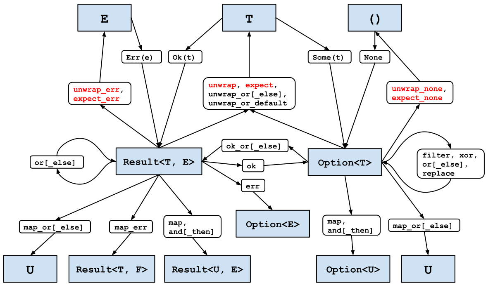

第 3 条：避免匹配 Option 和 Result
第1条 阐述了枚举（enum）的优点，并展示了 match 表达式如何强制程序员考虑所有可能性；这个方法探讨了在某些情况下，你应尽量避免使用 match 表达式 —— 至少是显式地。
第1条 还介绍了 Rust 标准库提供的两个无处不在的枚举：
Option<T>，表示一个值（类型为T）可能存在也可能不存在。Result<T, E>，用于当尝试返回一个值（类型为T）的操作可能失败，并可能返回一个错误（类型为E）。
对于这些特定的枚举，显式使用 match 通常会导致代码比实际需要的不够紧凑，而且不符合 Rust 的习惯用法。
第一种不需要使用 match 的情况是，当只关心值本身，而值的缺失（以及任何相关的错误）可以被忽略时。
#![allow(unused)] fn main() { struct S { field: Option<i32>, } let s = S { field: Some(42) }; match &s.field { Some(i) => println!("field is {}", i), None => {} } }
对于这种情况，使用 if let 表达式可以缩短一行代码，而且更重要的是，它的表达更清晰：
#![allow(unused)] fn main() { if let Some(i) = &s.field { println!("field is {}", i); } }
然而，大多数时候，值的缺失以及相关的错误是程序员必须处理的问题。设计软件以应对失败路径是困难的，大多数情况下这是无法通过语法支持减少的固有复杂性 —— 特别是，决定如果操作失败应该发生什么。
在某些情况下，正确的决定是执行一种鸵鸟策略，明确不处理失败。如果使用显式的 match 来这样做，会显得不必要的冗长：
#![allow(unused)] fn main() { let result = std::fs::File::open("/etc/passwd"); let f = match result { Ok(f) => f, Err(_e) => panic!("Failed to open /etc/passwd!"), }; }
尽管如此，要明确一点：这些辅助函数仍然会引发 panic!，所以选择使用它们与选择直接 panic!（第18条）是一样的。
然而，在许多情况下，正确的错误处理决策是将决策推迟给其他人。这在编写库时尤其正确，因为库的代码可能会在库作者无法预见的各种不同环境中使用。为了使其他人的工作更容易，即使这可能涉及不同错误类型之间的转换（第4条），也更倾向于使用 Result 而不是 Option。
Result 也有一个 [#must_use] 属性，用来引导库用户朝着正确的方向前进 —— 如果使用返回的 Result 的代码忽略了它，编译器将生成一个警告：
#![allow(unused)] fn main() { warning: unused `Result` that must be used --> transform/src/main.rs:32:5 | 32 | f.set_len(0); // Truncate the file | ^^^^^^^^^^^^^ | = note: `#[warn(unused_must_use)]` on by default = note: this `Result` may be an `Err` variant, which should be handled }
显式使用 match 可以让错误传播，但代价是增加了一些可见的样板代码（让人联想到 Go 语言）：
#![allow(unused)] fn main() { pub fn find_user(username: &str) -> Result<UserId, std::io::Error> { let f = match std::fs::File::open("/etc/passwd") { Ok(f) => f, Err(e) => return Err(e), }; // ... } }
减少样板代码的关键是 Rust 的问号运算符 ?。这个语法糖可以处理匹配 Err 分支和返回 Err(...) 表达式，只用一个字符就完成了：
#![allow(unused)] fn main() { pub fn find_user(username: &str) -> Result<UserId, std::io::Error> { let f = std::fs::File::open("/etc/passwd")?; // ... } }
Rust 新手有时会对此感到困惑：问号运算符在一开始很难被注意到，导致人们怀疑这段代码怎么可能正常工作。然而，即使只有一个字符，类型系统仍然在起作用，确保覆盖了相关类型（第1条）表达的所有可能性——让程序员可以专注于主线代码路径，不受干扰。
更重要的是，这些明显的方法调用通常没有额外的成本：它们都是标记为 #[inline] 的泛型函数，所以生成的代码通常会编译成与手动版本相同的机器代码。
这两个因素结合起来意味着你应该优先使用 Option 和 Result 转换，而不是显式的 match 表达式。
在之前的例子中，错误类型是一致的：内部和外部方法都使用 std::io::Error 表达错误。然而，情况往往并非如此；一个函数可能从各种不同的子库中累积错误，每个子库都使用不同的错误类型。
关于错误映射的讨论一般见第4条；现在，只需知道一个手动映射：
#![allow(unused)] fn main() { pub fn find_user(username: &str) -> Result<UserId, String> { let f = match std::fs::File::open("/etc/passwd") { Ok(f) => f, Err(e) => { return Err(format!("Failed to open password file: {:?}", e)) } }; // ... } }
可以使用更简洁、更符合 Rust 语法的 .map_err() 转换来表达：
#![allow(unused)] fn main() { pub fn find_user(username: &str) -> Result<UserId, String> { let f = std::fs::File::open("/etc/passwd") .map_err(|e| format!("Failed to open password file: {:?}", e))?; // ... } }
更好的是，甚至这可能也不必要 —— 如果外部错误类型可以通过实现标准特征 From（第5条）从内部错误类型创建，那么编译器将自动执行转换，无需调用 .map_err()。
这类转换具有更广泛的通用性。问号运算符是一个强大的工具；使用 Option 和 Result 类型上的转换方法将它们调整到可以顺利处理的形态。
标准库提供了各种各样的转换方法来实现这一点，如下面的地图所示。根据第18条，可能引发 panic! 的方法用红色突出显示。

（此图的在线版本可点击：每个框都会链接到相关文档。）
图中未涵盖的一种常见情况是处理引用。例如，考虑一个可能包含一些数据的结构。
#![allow(unused)] fn main() { struct InputData { payload: Option<Vec<u8>>, } }
这个结构上的一个方法尝试将有效载荷传递给一个加密函数，该函数的签名是 (&[u8]) -> Vec<u8>，如果简单地尝试获取一个引用，则会失败：

#![allow(unused)] fn main() { impl InputData { pub fn encrypted(&self) -> Vec<u8> { encrypt(&self.payload.unwrap_or(vec![])) } } }
#![allow(unused)] fn main() { error[E0507]: cannot move out of `self.payload` which is behind a shared reference --> transform/src/main.rs:62:22 | 62 | encrypt(&self.payload.unwrap_or(vec![])) | ^^^^^^^^^^^^ move occurs because `self.payload` has type `Option<Vec<u8>>`, which does not implement the `Copy` trait | help: consider borrowing the `Option`'s content | 62 | encrypt(&self.payload.as_ref().unwrap_or(vec![])) | +++++++++ }
错误消息准确地描述了使代码工作所需的内容，即 Option 上的 as_ref() 方法1。这个方法将一个对 Option 的引用转换为对引用的 Option：
#![allow(unused)] fn main() { pub fn encrypted(&self) -> Vec<u8> { encrypt(self.payload.as_ref().unwrap_or(&vec![])) } }
总结一下：
- 习惯使用
Option和Result的转换，并且优先使用Result而不是Option。 - 在转换涉及引用时，根据需要使用
.as_ref()。 - 在可能的情况下，优先使用它们而不是显式的
match操作。 - 特别是，使用它们将结果类型转换成可以使用
?运算符的形式。
注释
注意，这个方法与 AsRef 特征是分开的，尽管方法名称相同。
原文点这里查看